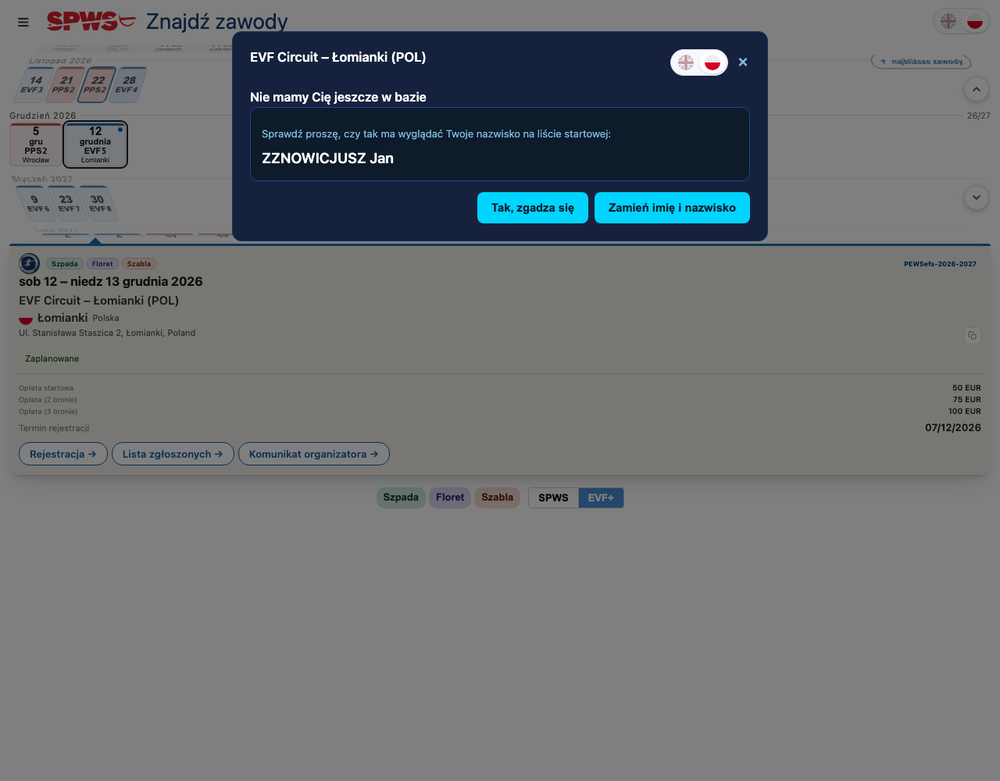
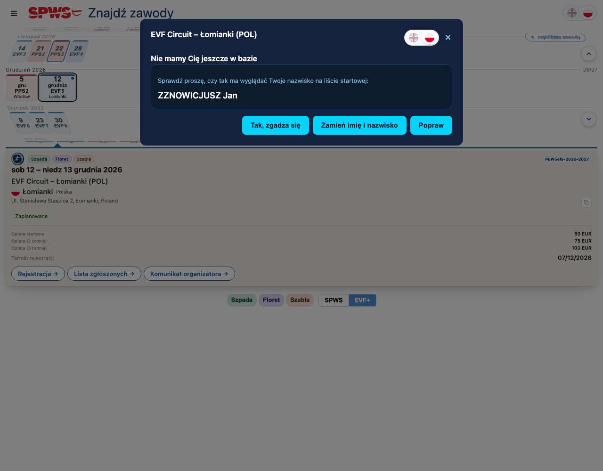
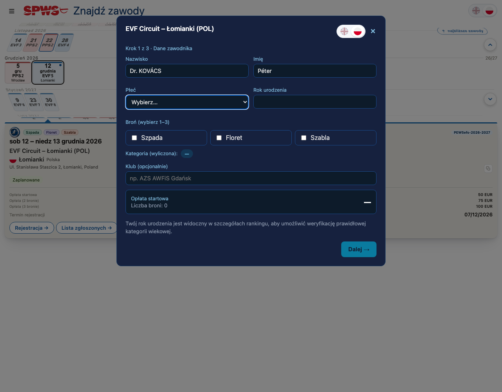
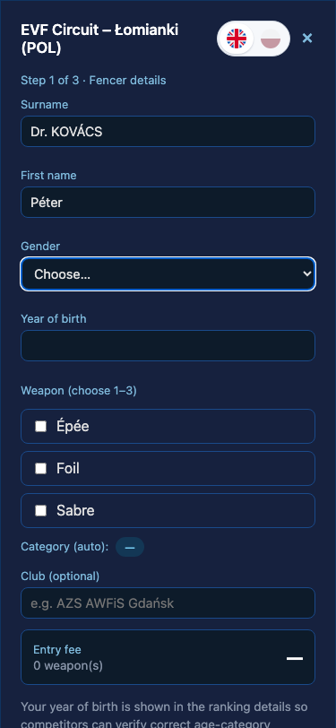
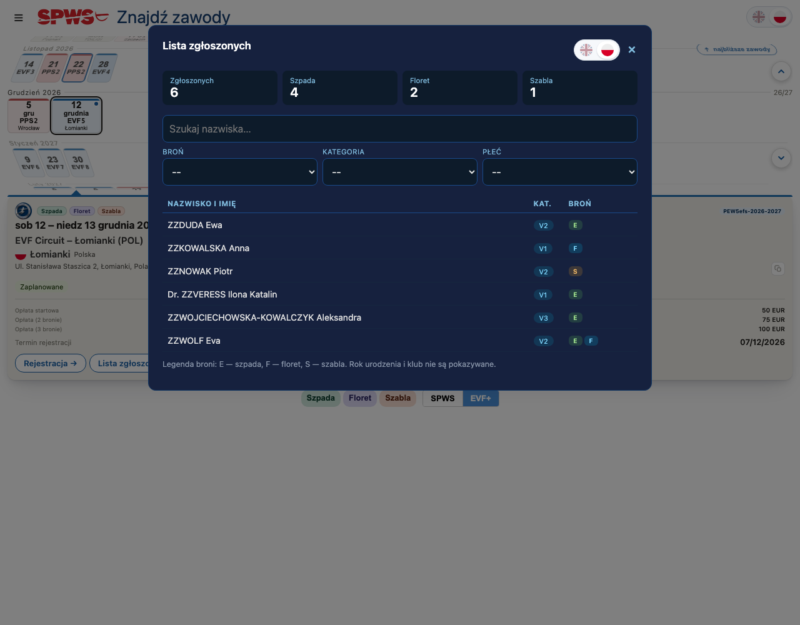
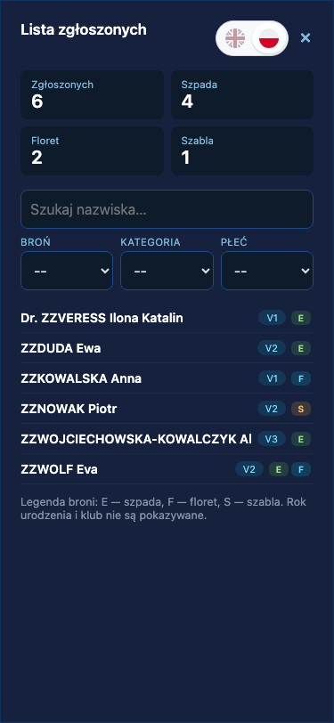
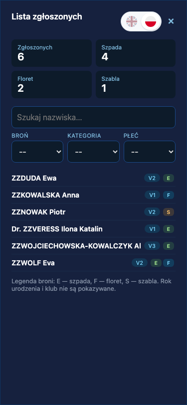

Registration form · Names · Release 1 of 4 · Pixel sheet
Captured on the WordPress calendar page body (doc/wordpress/znajdz-zawody.html) with the bundle built from main and from this branch, LOCAL standing in for PROD. Everything that should not change is pixel-identical; the four new states are below for your approval, with the two ADR amendment drafts. Nothing is pushed.
01 · Nothing else changed
registration-names-release-1-sheet/*/form-report.json, list-report.json).02 · The new states
1 · the newcomer's name check: „Popraw” added beside the two existing buttons


2 · a title written on leaving the box: „dr kovács” + „péter” → „Dr. KOVÁCS” + „Péter”


3 · the reversed-fields question: „annalisa” + „zzbellandi”
4 · the entry list: a titled entry stands under its surname



03 · LOCAL walk-through
04 · Measured on PROD and CERT, read-only
fn_registration_realign_names, run by the migration) changes 12 of PROD's 66 newcomers' entries: 10 given names into title case, and 2 titles moved in front of the surname. On CERT it changes 1 entry. No two entries collide on the unmatched-entry key. Linked entries are not touched.05 · For your sign-off
ADR-079 · Amendment (2026-11-21) — a declared name is stored in one form, a title is kept apart, reversed fields are asked about
Context. On 21 Nov 2026 PROD held 193 entries. Eleven newcomers' given names were not in the form the organizer's files use, two carried a title the Austrian and Hungarian way, and four newcomers had typed their given name into the surname box. The 2026-10-03 amendment kept an unlinked registration's name „as typed”.
Decision. (1) A newcomer's name is stored in one form: surname in capitals, given name in title case by the rule the organizer's files use, spaces trimmed and collapsed. The letters remain the fencer's; only case and spacing are written. This replaces „as typed” in the 2026-10-03 amendment for unlinked registrations. The form writes it when a box is left and on „Dalej”; the trigger writes it on every write of a newcomer's row. (2) A title (dr, ddr, prof, ing, mag, mgr, dipl-ing, doc) at either end of either box is moved in front of the surname in one written form and is ignored by every name comparison. (3) When nobody matches and the surname box holds a known given name while the given-name box does not, the form asks once whether the fields are reversed; either answer is believed. Known given names are the fencer table's, read live, and the EVF ranking's, held in tbl_common_given_name, given names only, insert-only, refreshed monthly. A visitor receives two yes/no answers and never the lists. (4) The newcomer's name check offers „Popraw”; the name boxes carry autofill marks.
Not done, on evidence. A spelling question: on the EVF ranking it would wrongly ask 5 to 9 in 100 correctly spelled foreign fencers. A hand-written names list: it changed no answer on PROD's 193 entries.
Consequences. The entry list shows one form for every newcomer; a titled fencer stands under the surname; a fencer we hold is unaffected, since a linked entry takes the roster's name. FR-167; RFNAME.01–27.
ADR-080 · Amendment (2026-11-21) — the surname goes into the file without its title
Decision. toCanonicalName (TypeScript) and to_canonical_name (Python) leave a title written with the surname out of the file's surname, so the organizer's software sorts and matches the fencer by the surname. Every name without a title is written exactly as before, byte for byte. Tests: RFNAME.27 in both languages.
06 · Found on the way
spws-docs through /mcp restores it.pixel sheet · FR-167 release 1 · 21 Nov 2026 · tools: registration-names-release-1-sheet/tools/proof.cjs (form · list · walk), diff.py, seed-list.sql, build_sheet.py